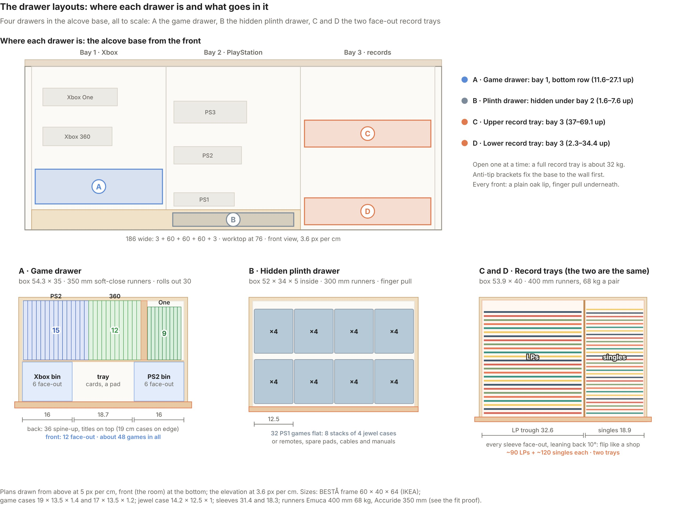
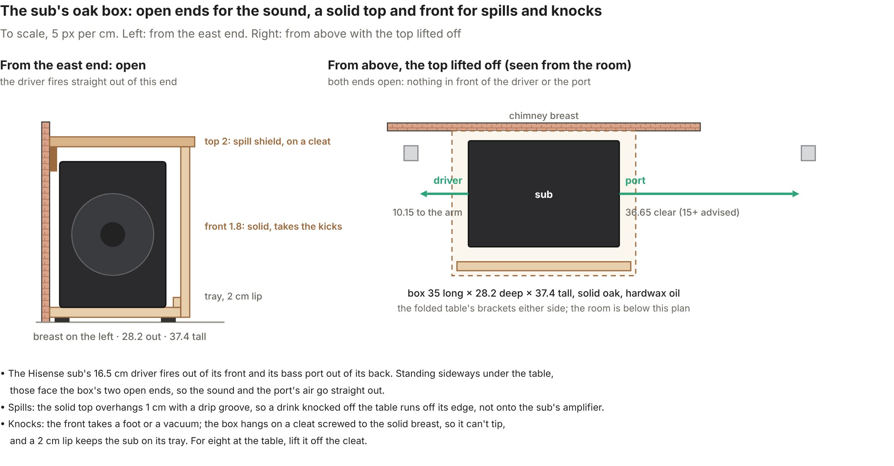
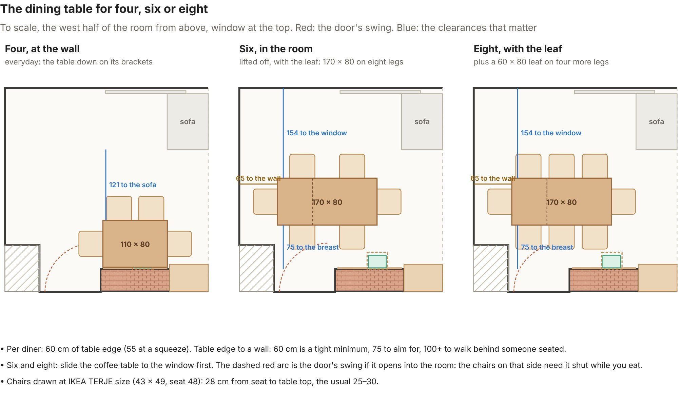
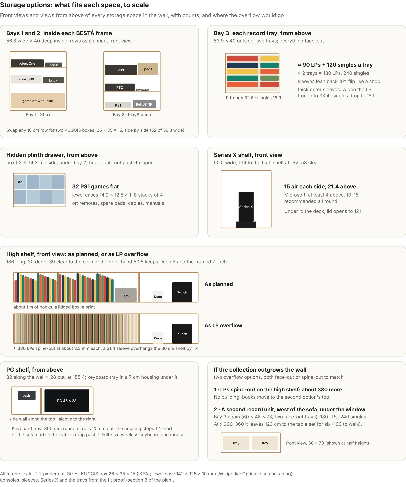

Media Wall v13
The artisan oak build in Farrow & Ball Card Room Green, drawn to the room as you measured it. Switch views and greens, turn on the numbered key, answer the open questions, and tick off the buy list as you go.
What changed in v13: less cladding, as you asked. The slatted spine, the slatted PC screen, the slat panel behind the turntable, the slatted sub box and the reeded table are all gone; the PC's leads run in conduit chased into the solid wall, the sub stands on a plain oak riser and the folded table is a plain oak panel. The stairs now go up to the first floor. And the drawer layouts: every drawer to scale, with what goes in it. v13.1: a safety box for the sub (open ends for the sound, a solid top and front for spills and knocks), six at the table with its leaf (170 × 80, every clearance checked), and the side view now shows how deep the alcove is round the wall.
Heights, from the floor
- 235Ceiling, as measured
- 196High shelf: books, a box, a print, the “now playing” single, Deco B
- 155.4Record ledges over the TV and round the corner; the PC shelf on the side wall
- 153.3Top of the dining table, folded up
- 134Series X shelf, over the turntable (its lid has to 130)
- 116.5TV centre, LG C6 55in on its stand
- 76Oak worktop, and the dining table when it's down
- 9Plinth under the two BESTÅ bays, with a hidden drawer
In the wall
- Alcove: the TV between two oak uprights, 25 cm nearer the side wall; the turntable on the worktop to its right with the Series X on a shelf above; three 60 cm bays below for the Xbox consoles, the PlayStations and the two face-out record trays.
- Side wall: the record ledge wraps the corner with four more LPs, then an oak shelf for the PC above the end of the sofa, with the pad dock beside it.
- Chimney breast: a 110 × 80 cm solid oak table with pegged breadboard ends, folded flat every day, down on two steel brackets for four, lifted off onto legs for six or eight. The sub stands under it on an oak riser.
Lighting
- The LED strip you have now, on the ceiling round the whole room, facing down.
- Two four-head cone spotlight bars, Wolston style, both on your existing ceiling points. The first, on the rose between the TV and the sofa, lights the shelves, the ledge, the coffee table and the turntable. The second, between the door and the west wall, lights the table and the framed LPs: see it in the six-seat view.
- LED grooves in the oak uprights and a bias light behind the TV. No spot ever points at the screen.
New in v13
- Less cladding. Gone: the slatted cable spine on the side wall, the slatted PC screen, the slat panel behind the turntable, the slatted box round the sub and the reeded underside of the table. The slat-wall alternative is retired too.
- Cables you can't see. Your side wall is solid, so the electrician chases a 25 mm conduit into it on the same visit: the PC's leads drop through a brush grommet in the shelf, down inside the wall and behind the skirting to the base. No spine, no trunking.
- Plain oak where it was slatted. The sub stands on a low oak riser between the folded brackets; the folded table is plain oiled oak between its pegged breadboard ends, under the two framed LPs.
- The stairs go up. The flight beside the door now rises to the first floor behind the wooden banister, through an opening in the ceiling. Tell us which way it runs and we'll match it.
- The drawer layouts, below: where each of the four drawers sits in the base, and each one from above, to scale, with what goes in it and how many.
- v13.1, the sub's box. Its driver fires out of its front and its port out of its back, and it stands sideways, so the oak box is open at both ends: nothing in front of either, and the port has 37 cm of clear air (15–30 is advised). A solid top with a drip groove sheds spills; a solid front takes kicks; it hangs on a cleat on the breast so it can't tip. Drawing below.
- v13.1, six at the table. The 110 × 80 top alone gave six only 55 cm each. Six now use the leaf too: 170 × 80, 85 cm a diner on the long sides, 80 at each end, 75 cm off the breast, 65 to the west wall, the breast-side chairs clear of the sub's box.
- v13.1, the side view marks the alcove's depth round the wall: 38 of the 46 cm base sits inside it, 8 stands proud, the uprights and shelves are wholly inside.
- Fit proof: 46 of 58 checks fit outright, 9 are tight, 3 need a check on site, none fail.
Drawer layouts
A: the game drawer in bay 1. B: the hidden plinth drawer under bay 2. C and D: the two face-out record trays in bay 3. Top: where each drawer is in the base. Bottom: each one from above, front at the bottom, to scale.

The sub's box
Open at both ends so the driver and the port fire straight out; a solid oak top and front against spills and knocks; hung on a cleat on the chimney breast so it can't tip. To scale.

What we still need from you
17 things only you can tell us, the ones that change the drawings first. Answers saved here reach both of you and the next round of the plan. A photo is often quicker than words.
Answers can't be saved for both of you from this view: they're kept on this device. When you're done, use Copy all answers and paste them into a message.
You can read the answers here but not change them. Ask Emma to give you Contributor access in the Share menu.
01Your L-sofa's size, and which way its return points
The plan assumes 188 × 168 cm, 80 high, with the return along the side wall. It sets the PC shelf, the walkway and the dining clearances.
How: Overall width, overall depth with the return, back height, seat depth.
02The door to the hall: which side it hinges, and does it open into the room?
If it swings in, the west-end dining chair sits in its path.
How: Stand in the room facing the door: hinges on the left or the right?
03The west end's sizes: which of 935, 1045, 660 and 820 are the recess, the door and the stair box?
The stair box and the door are drawn roughly until we know.
How: A photo of that end of the room, or the sketch with each number pointed at.
04The side wall and the chimney breast: solid, or plasterboard?
The ledge, the PC shelf and the dining brackets fix to them; plasterboard needs different fixings.
How: Knock: a hollow sound is plasterboard. Or look at an existing hole.
05Roughly how many LPs and singles, and are most in thick outer sleeves?
The wall holds about 188 LPs and 240 singles, all face-out. Thick sleeves need a wider trough.
How: A rough count is fine.
06The turntable's make and model, and does it have a PHONO/LINE switch?
The zone takes up to 45.2 × 35.2 cm; a switch decides whether you need the separate preamp.
How: The model is usually on the plinth or underneath.
07The PC case's make and model, and which side its glass panel is on
The shelf allows 23 × 45.3 cm, 46.6 tall, with the glass facing the room.
How: Or measure width, depth and height.
08The Series X fan stand's make and model
The shelf takes a footprint up to about 30 cm wide; the plan assumes 20.5 × 20.5.
How: A photo of the stand is enough.
09The 10-gang extension's length
It lies flat on the worktop behind the TV; the plan allows 56 cm.
How: End to end, plug sockets only.
10The second ceiling point's exact spot
The plan puts it about 35 cm in from the west wall and 2.3 m from the window.
How: Measure from the west wall, and from the window wall.
11Dining chairs: ones you have, or four folding ones? And where would the leaf and legs live?
The plan draws IKEA TERJE (seat 48); any chair with a 45–48 cm seat works.
How: Seat height of yours, and a spot for the leaf (the garage?).
12The 23 × 22 cm box in the window's west corner: what is it?
If it's pipe boxing it stays; if not, it might go.
How: A photo is quickest.
13Wired ports for the projector (master) and the music room (bedroom 2)?
Each is one more Cat6 run on the electrician's visit; cheaper now than later.
How: Yes or no for each.
14The stairs by the door go up (thanks). Which way does the flight run?
v13 draws them going up, rising away from the room towards the hall, behind the wooden banister.
How: A photo from the room, or a line: rising towards the hall, or towards the window?
15Roughly how many PS2, Xbox 360 and Xbox One games? (from your v6.1 plan)
The game drawer holds about 48, 12 of them face-out; more needs an overflow spot.
How: A count of each is plenty.
16Is the 10-gang surge-protected, and where are its two switches? (from v6.1)
It feeds the TV and the modern consoles; if not, swap it for one that is.
How: Look for 'surge' on the label.
17Console model numbers, from the labels underneath (optional, from v6.1)
The rows assume the largest version of each console; real models may free up height.
How: Photos of the labels are fine.
Buy list and tracker
In build order, as in section 11 of the plan. Tick each one off and write in what you paid; it saves for both of you.
1 Network, now0 of 5 done
2 Electrician and cabling0 of 10 done
3 Paint0 of 4 done
4 Base unit0 of 13 done
5 Oak joinery0 of 7 done
6 Dining wall0 of 10 done
7 Lighting0 of 4 done
8 TV, consoles and AV0 of 9 done
9 Vinyl kit0 of 5 done
10 Finishing0 of 4 done
Fit proof
Every item in the wall against its published size: 46 of 58 fit outright, 9 are tight and 3 need a check on site. Source numbers refer to the plan's Sources list.
The TV between the uprights5 checks 1 to check
126.5 between the oak uprights, the left one now a corner post on the side wall; the ledge's underside at 153
| Item | Size (cm) | Space | Spare (cm) | Result |
|---|---|---|---|---|
| LG OLED C6 55 in, on its stand | 122.2 × 70.3 × 4.5 panel; 75.7 tall on the stand2 | 126.5 wide | 2.15 each side | Fits |
| Top of the screen | 151.7 (bottom 81.4, centre 116.5)2 | ledge at 153 | 1.3 | Fits |
| LG stand base | 47 × 232 | worktop 46 deep | set 2 cm off the wall: 11 cm in front of it for the soundbar's leads | Fits |
| Soundbar, Hisense AX5100G, centred under the TV | 92 × 9 × 6 tall3 | x 21.75–113.75, top 82 | the sightline to the screen's bottom passes 83.54–84.17 over it | Fits |
| The TV's HDMI plugs, with the screen 2.15 from the corner post | C6 sockets face sideways on the back panel2 | behind the screen | plugs stay behind the panel; if a stiff lead pushes out, use 90° HDMI adapters | Check |
The turntable zone, right of the TV7 checks 2 tight
50.5 wide × 46 deep, worktop 76 to the Series X shelf's underside at 130
| Item | Size (cm) | Space | Spare (cm) | Result |
|---|---|---|---|---|
| Turntable, AT-LP120X size (worst case) | 45.2 × 35.2 × 14.2 with its lid8 | 50.5 wide | 2.65 each side | Fits, tight |
| Its depth, with room behind for the lid's hinges | 35.2, front 2 cm in from the worktop's edge8 | 46 deep, to the painted wall | 8.8 behind it | Fits |
| Lid open | cover 44.1 × 34.6; standing up, its top at about 12117 | shelf underside 130 | about 9 | Fits |
| Phono preamp, hung under the shelf at the back | about 11 × 11 × 4.5 | 125.5–130, at the back | 4.4 over the open lid's edge; lift the lid gently | Fits, tight |
| Series X fan stand on the shelf | 20.5 × 20.5 (assumed; model to confirm) | 50.5 × 30 shelf | 15 each side | Fits |
| Xbox Series X, standing | 15.1 × 15.1 × 30.1 tall4 | top at 170.6 | 21.4 clear above (Microsoft's minimum is 4); 15 each side, inside the 10–15 it recommends | Fits |
| Deco B on the high shelf, right | 11 × 11 × 11.47 | 50.5 wide, 39 to the ceiling | beside the framed 7-inch, 27 clear above | Fits |
Shelves above the TV4 checks
ledge top 155.4, 7 deep; high shelf top 196, 30 deep; ceiling 235
| Item | Size (cm) | Space | Spare (cm) | Result |
|---|---|---|---|---|
| Four LPs on the record ledge | 4 × 31.4 = 125.6 wide13 | 126.5 long | 0.9: snug, as drawn | Fits |
| Ledge LPs leaning back 8° | tops at 186.513 | high shelf underside 192 | 5.5 to lift one out over the 1.5 lip | Fits |
| Books on the high shelf | up to 30 tall | 39 to the ceiling | 9 over the tallest | Fits |
| Oak uprights | 159 long (worktop to ceiling)1 | 235 ceiling | buy 165 and scribe to the ceiling | Fits |
Bay 1, Xbox (BESTÅ frame on the 9 cm plinth)4 checks
56.8 wide inside, 40 deep, rows as in v9
| Item | Size (cm) | Space | Spare (cm) | Result |
|---|---|---|---|---|
| Xbox One, original, and its brick | 33.3 × 27.4 × 7.9; brick 17 × 7.5 × 4.812,11 | 16 tall row | 8.1 above; 21.5 beside the console for the brick | Fits |
| Xbox 360, original, and its brick | 30.9 × 25.8 × 8.3; brick about 21 × 10 × 612,16 | 16 tall row | 7.7 above; 25.9 beside for the brick | Fits |
| Game drawer | box 54.3 × 35 on 350 mm runners; cases 19 × 13.5 × 1.415,13 | 25.2 tall row, 40 deep | about 3 above the leaning cases; 5 behind the box | Fits |
| Depth with the leads | console 27.4 + HDMI plug about 512 | 40 deep, back open | about 7.6, then the 4 cm channel | Fits |
Bay 2, PlayStation (BESTÅ frame on the plinth)5 checks 1 tight1 to check
56.8 wide inside, 40 deep
| Item | Size (cm) | Space | Spare (cm) | Result |
|---|---|---|---|---|
| PS3, original, + controller basket | 32.5 × 27.4 × 9.812 | 23.7 tall row | 13.9 above; 24.3 beside for the basket | Fits |
| PS2, original, + HDMI switch | 30.2 × 18.3 × 7.8; switch 12.7 × 5.9 × 2.512,10 | 16.5 tall row | 8.7 above; 26.6 beside | Fits |
| PS1, original, + RetroTINK-6X CE | 27 × 18.8 × 6; RetroTINK size not published12,9 | 17 tall row | 29.8 beside the PS1 reserved for it; measure it when it arrives | Check |
| Hidden slim drawer in the plinth | box 52 × 34 × 5, 300 mm full-extension runners, a finger-pull groove (no push-to-open at floor level)15 | 9 cm plinth, 120 wide | about 2 above and below the box | Fits |
| Switch 2 (TL-SG108) and the retro 6-way in the channel | 15.8 × 10.1 × 2.5; 6-way about 34 × 6 × 46 | 4 cm channel | on their edges | Fits, tight |
Bay 3, the records (18 mm ply carcass from the floor)3 checks
56.4 wide × 40 deep × 69.4 tall inside, under the turntable
| Item | Size (cm) | Space | Spare (cm) | Result |
|---|---|---|---|---|
| Two face-out record trays | trays 53.9 × 40 on 400 mm runners, 68–70 kg pairs15,13 | 56.4 inside | exact: 53.9 + 2 × 1.25 runner allowance = 56.4 | Fits |
| Tray heights | lower sleeves to 34.4, upper to 69.113 | top panel underside 71.2 | 2.6 and 2.1 finger room | Fits |
| LP trough · singles trough | 32.6 for 31.4 sleeves · 18.9 for 18.3–18.413 | 52.1 inside each tray | 0.6 each side · 0.25–0.3 each side | Fits |
The side wall: the ledge wraps the corner, the PC shelf6 checks
one oak line at 155.4: ledge 134 long × 7, then a shelf 82 × 28
| Item | Size (cm) | Space | Spare (cm) | Result |
|---|---|---|---|---|
| Four more LPs on the wrap ledge | 4 × 31.4 + gaps = 129.813 | 134 long | 2.7 | Fits |
| The PC on its shelf | 23 × 45.3 × 46.6 tall (an average gaming case, e.g. Corsair 4000D)25 | 28 × 82 | 2.5 off the wall, the brush grommet and pad dock beyond it; height 46.6 under the 79.6 to the ceiling | Fits |
| Air above the PC | top at 202 | 235 ceiling | 33 for the top exhaust | Fits |
| Shelf over the end of the sofa | underside 151.423 | sofa back 80 | 71.4; the shelf covers only the 28 cm nearest the wall | Fits |
| Keyboard tray under the PC shelf (v6.1) | 7 cm housing, tray rolls 25 out on 300 mm runners15 | sofa back 80 | 64.4 over the sofa's back; pulled out, its front edge is 53 from the wall, still over the return's seat | Fits |
| Out of the TV's sightlines | PC about 54° left of the line to the screen from the sofa1 | — | v10's PC sat at the screen's left edge | Fits |
The dining wall on the chimney breast20 checks 6 tight1 to check
breast 117.5 wide; the table 110 × 80 × 2.7 solid oak, about 17 kg
| Item | Size (cm) | Space | Spare (cm) | Result |
|---|---|---|---|---|
| Table on the breast | 110 wide1 | 117.5 | 3.75 each side | Fits |
| Folded up | about 6 off the breast, top edge 153.319 | framed LPs from 165 | 11.7 | Fits |
| Two Hebgo brackets under it | arms 58, 80 apart; 500 kg a pair18 | a 80 deep top | 22 beyond the arms; spacing inside Häfele's 80 | Fits |
| Three lift-off hinges on the backboard | 100 × 88, rated for a 120 kg door19 | a 17 kg top | slide it 5 cm sideways to lift it off | Fits |
| Four at the wall: two on the room side | 110 of edge22 | 60 each recommended | 55 each | Fits, tight |
| Four at the wall: room to the sofa | table edge 83 out22,23 | sofa front | 121 (walk behind: 100+) | Fits |
| The door and the dining chairs | door 83 wide, hinged on the breast side, opens in (you confirmed)1 | its swing reaches about 44 out from the recess wall | the west-end chair (four) and the breast-side chairs (six, eight) sit in its swing: keep it shut while you eat, or have it rehung to open into the hall | Fits, tight |
| Six and eight: lifted off onto legs, with the leaf | table 110 + leaf 60 = 170 × 80, top at 73.7–75.720 | dining height about 75 | within 1.3; four legs under the table, four under the leaf, joined by two dowels and two clips | Fits |
| Six: two a side, one at each end | 170 of edge each long side, 80 at each end22 | 60 each | 85 each on the sides (25 spare); 80 at the ends | Fits |
| Eight: three a side, one at each end | 170 long22,20 | 60 each | 56.67 each | Fits, tight |
| Six and eight: to the breast and the window | table 75–155 out22 | 75 to aim for | 75 to the breast; 154 to the window | Fits |
| Six and eight: the west end | table end at 40222 | west wall at 467 | 65 for the end diner (60 is the tight minimum; the stairs are behind the breast-side corner, clear of it) | Fits, tight |
| Six and eight: the east end and the coffee table | end chair at x 183–23222,23 | coffee table and sofa | 7.5 to the coffee table's edge: slide it towards the window first; the sofa ends at 190, clear of the chair (49 to its front line) | Fits, tight |
| Six: the breast-side chairs and the sub's box | chairs at x 253–296 and on, backs at 34 from the breast21 | box x 214–249, top 29.2 out | 4 beside it and 4.8 in front of it: chairs and box don't meet | Fits, tight |
| Eight: the breast-side end chair and the sub's box | chair at x 238.83–281.8321 | box x 214–249 | they overlap 10.17 across, and a pushed-back chair would reach the box: for eight, lift the box off its cleat and stand the sub at the end of the base (it's wireless; leave 1 m of slack in its lead) | Check |
| Sub in its oak box, under the dining wall | sub 30.4 long × 21.4 out × 29.4 tall, standing sideways: driver east, port west3 | box 35 × 28.2 × 37.4 tall, between the folded arms | 7.85 clear of the east arm, 34.35 of the west; 3 over the sub | Fits |
| The sound: both ends open | the driver fires out of the east end, the port out of the west end24,3 | 15 for the port | port 36.65 to the nearest thing (the west arm), driver 10.15; the top and front are solid but neither faces the driver or the port | Fits |
| Spills and knocks | solid oak top 2 thick, 1 overhang with a drip groove; solid oak front; base tray with a 2 cm lip each end | a drink from the table, a foot, a vacuum | a spill runs off the top's edge in front of the box, never onto the sub; kicks land on the oak front; the box hangs on a cleat screwed to the breast, so it can't tip and the sub can't slide out | Fits |
| Feet under the table, four at the wall | the box 29.2 out from the breast21 | table 80 deep | 53.8 of legroom in front of it on the room side; the end seats are clear | Fits |
| Chairs at the table | seat 4821 | top 76 | 28 seat to top, the usual 25–30 | Fits |
The room4 checks
467 × 347, ceiling 235
| Item | Size (cm) | Space | Spare (cm) | Result |
|---|---|---|---|---|
| Eyes to screen from the sofa | the L-sofa's long side against the window wall, 10 off the radiator1,23 | 335 window wall to screen | about 2.65 m; a 55-inch fills about 26° | Fits |
| From the end of the sofa's return | sitting up at its end, 217 from the screen23 | straight ahead of the TV | the TV's move puts it square on to this seat | Fits |
| TV centre against seated eyes | 116.52 | eyes at 105–112 | about 1–2.5° above the eye line | Fits |
| Both spotlight bars under the ceiling | 22.4 drop14 | 235 ceiling | lowest shade at 212.6 | Fits |
The living room, the dining layouts, storage and the house




The living room is drawn from your measurements; the L-sofa from your photo: its long side ends in line with the breast's reveal (about 188 cm), the return drawn at 168. The house outline is traced from the agent's plans.
Downloads
- The full plan, v13PDF on GitHub
- The build guide, v13PDF on GitHub
- artisan oak - Card Room Green (HD render)PNG on GitHub
- artisan oak - heights and widths (HD render)PNG on GitHub
- artisan oak - numbered key (HD render)PNG on GitHub
- dining wall set for four (HD render)PNG on GitHub
- table set for six, both spot bars (HD render)PNG on GitHub
- the PC side wall (HD render)PNG on GitHub
- House plan - Decos and Cat6PNG on GitHub
- Living room plan - L-sofa and diningPNG on GitHub
- Dining layouts - four, six and eightPNG on GitHub
- Storage options - what fits each spacePNG on GitHub
- Drawer layouts - where each drawer is and what goes in itPNG on GitHub
- Sub box - open ends, solid top and frontPNG on GitHub


Each link opens the file in the project's GitHub folder, media-wall/out/, where the download button saves it.